Customer's SupportV. SURESH +91-9444959053
Working TimeMON–SAT: 10:00AM–06:00PM
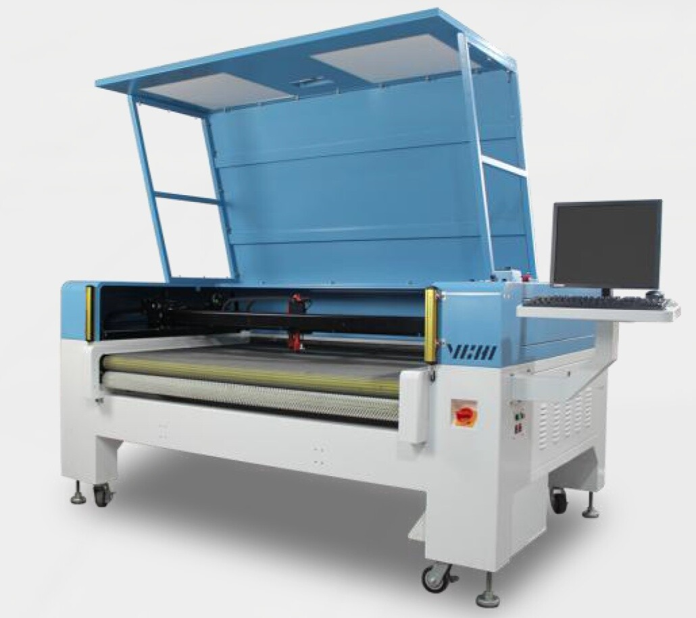
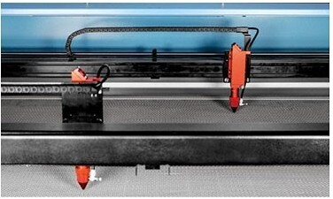
Double rail dual head system working separately, so you can cut a different label with each head.
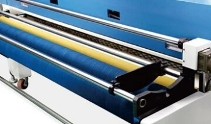
Truly integrated feeding system, not a pulling shelf. Multi-material auto-feeding: knitted fabric, cloth, leather, foam (capable of multi-layer feeding).
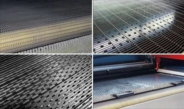
Herringbone bed for soft fabric, grid bed for leather, E-style bed for the footwear industry, and 850T bed for added safety.
| Model | CH1812TT-AT-SCCD |
|---|---|
| Laser Power | ≤90W x2 |
| Laser Type | CO2 tube |
| Processing Area | 1800 × 1200mm |
| Gross Power | 4935W |
| Measurement (L×W×H) | 2480 × 2020 × 2520mm |
| System / Compatible Format | Windows XP/7/8/10, AI, PLT, DXF, DST, BMP, JPG, JPEG, PNA, TIF |
| Weight | 2500KG |
| Power Supply | 220V, 50Hz/60Hz, 10A |
| Environmental Requirements | Temperature 10–30℃, Humidity (no condensation) 30–80% |
| Marking Precision | 0.2–0.5mm |
| Cutting Speed | 300–600mm/s |
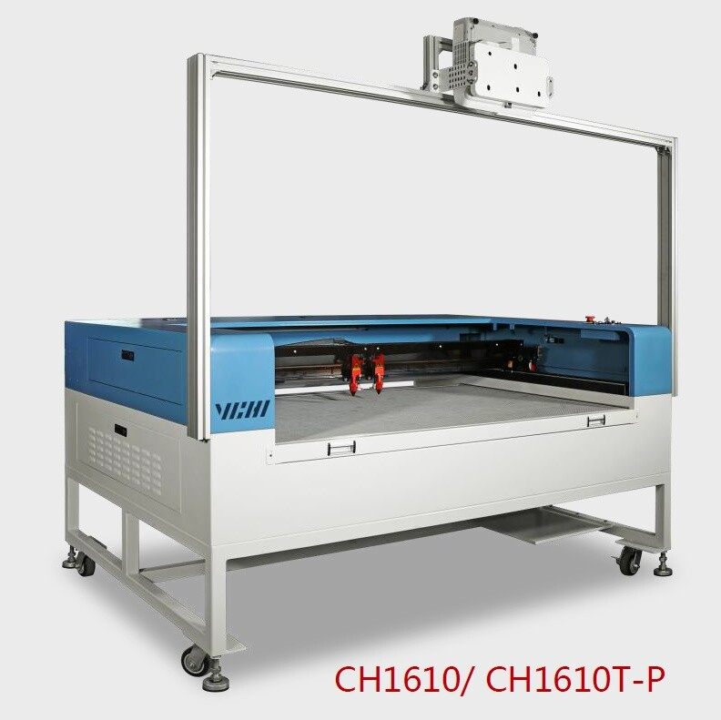
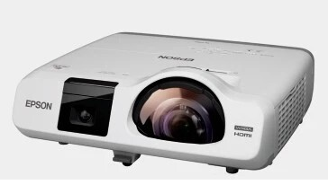
Projector positioning preview with an instant preview of nesting effects — convenient and fast.
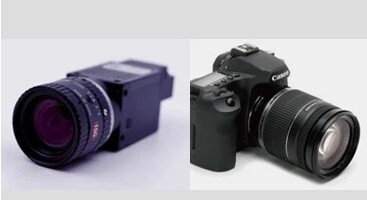
Automatic deformation cutting based on material transformation; the camera follows label transformation for accurate graph matching.
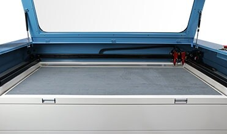
Large-scale use of the working area to achieve large-format cutting and engraving needs.
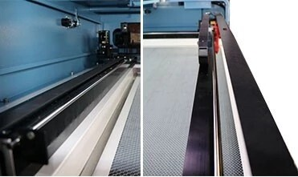
Four-wheel linear guide rails and precision gear driving ensure processing precision and speed, with easy maintenance and stable operation.
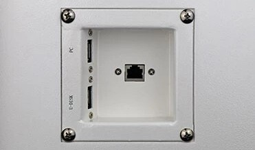
Colour screen plus offline board with graphical preview; continues working after power loss and outputs by layer, with PC / USB / network input modes.
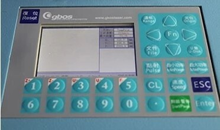
Operated via digital panel and computer software, with all parameter settings and process instructions available in both Chinese and English.
| Model | CH1610T-P |
|---|---|
| Laser Power | ≤90W x2 |
| Laser Type | CO2 glass laser tube |
| Processing Area | 1600 × 1000mm |
| Gross Power | ≈3500W |
| Measurement (L×W×H) | 2300 × 1530 × 2170mm |
| System / Compatible Format | Windows XP/7/8/10, AI, PLT, DXF, DST, BMP, JPEG, JPG, PNA |
| Weight | 550KGS |
| Power Supply | 220V, 50Hz/60Hz, 10A |
| Environmental Requirements | Temperature 10–30℃, Humidity (no condensation) 30–80% |
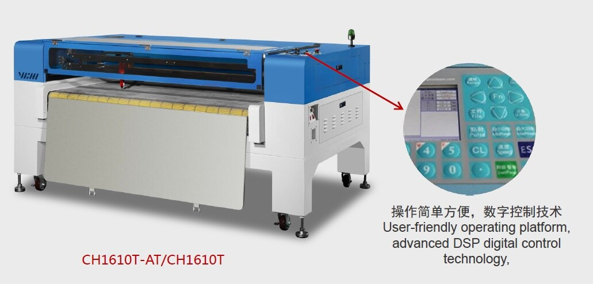
The industry's first double-layer automatic feeding function, paired with two intelligent interactive laser heads, delivers over 4x the working efficiency of a single-head laser cutting machine — higher productivity, lower energy consumption and less labour. Ten years of devotion have gone into VCHI Laser's core technology, achieving the best beam quality and the most stable, easily maintainable optical path design in the industry. The same high-power laser bonding technique used in car manufacturing is applied to the machine frame, resolving tolerance issues and strengthening body stability and fitting-surface flatness — guaranteeing long service life, stable operation, and a refined appearance.
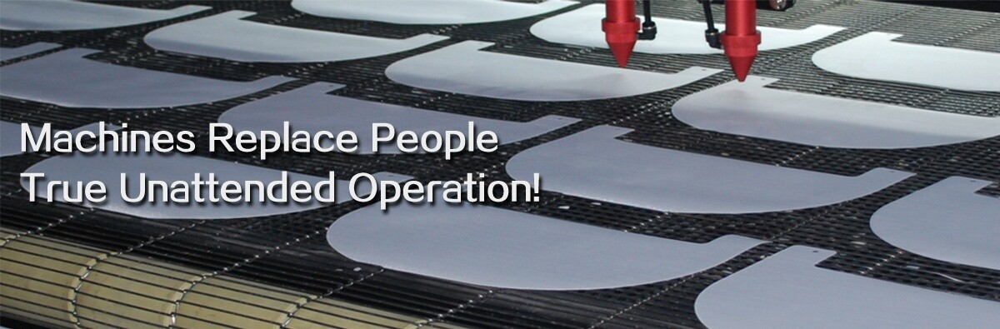
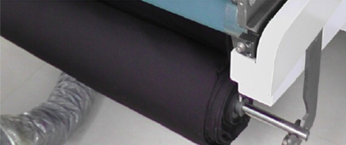
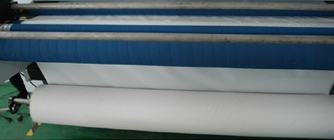
Truly integrated feeding system, not a pulling shelf. Multi-material auto-feeding: knitted fabric, cloth, leather, foam (capable of multi-layer feeding).
| Model | CH1610T-AT |
|---|---|
| Processing Area | 1600 × 1000mm |
| Gross Power | 1.8KW |
| Measurement (L×W×H) | 2380 × 2100 × 1170mm |
| System / Compatible Format | Windows XP/7/8/10, AI, PLT, DXF, DST, BMP, JPG, JPEG, PNA, TIF |
| Weight | 535KG |
| Power Supply | 220V, 50Hz/60Hz, 10A |
| Environmental Requirements | Temperature 10–30℃, Humidity (no condensation) 30–80% |
| Model | GH1810T-AT |
|---|---|
| Laser Power | ≤90W x2 |
| Laser Type | CO2 glass laser tube |
| Processing Area | 1600 × 1000mm |
| Gross Power | ≈2900W |
| Measurement (L×W×H) | 2380 × 2100 × 1170mm |
| System / Compatible Format | Windows XP/7/8/10, AI, PLT, DXF, DST, BMP, JPEG, JPG, PNA |
| Weight | 859KG |
| Power Supply | 220V/10A, 50Hz or 60Hz |
| Environmental Requirements | Temperature 10–30℃, Humidity (no condensation) 30–80% |
| Cutting Precision | ±0.2mm |
| Cutting Speed | ≤600mm/s |